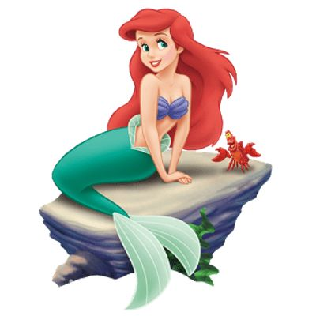
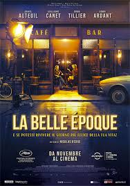

Películas recomendadas
Carteleras de cine
Categoría
Animación
Actores
Infantil
Bambi
La Sirenita
Blancanieves
Mary Poppins
La Brújula Novata

Harry Potter
La Brújula Dorada
Adultos
El viaje de Chihiro
Akira

Volver
La Belle Epoque
¿Cuál recomendarías tú?